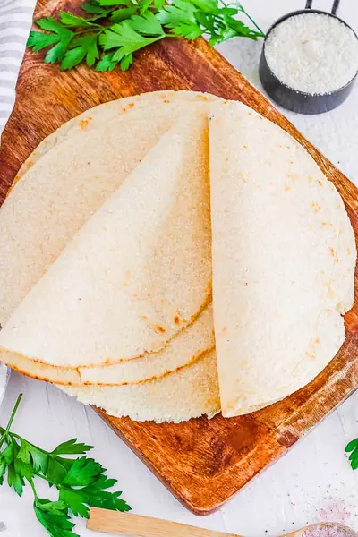

Almond Flour Tortillas Recipe

Ingredients
- 1 cup almond flour
- ¼ cup coconut flour
- ½ tsp salt
- 1 tsp xanthan gum
- 1 tsp baking powder
- 1 egg (room temperature)
- 2 tbsp water
- 1 tbsp olive oil
- ½ tbsp apple cider vinegar
Steps
- Whisk together the almond flour, coconut flour, salt, xanthan gum, and baking powder until well combined.
- In a separate bowl, whisk together the egg, water, olive oil, and apple cider vinegar.
- Pour the wet ingredients into the dry and mix to form a dough.
- Remove and shape into a ball. Allow the dough to rest for 10-15 minutes.
- Divide the dough into 4 even balls.
- Place one ball in between 2 sheets of baking paper. Roll dough to form a thin circle.
- Remove the top layer of baking paper, place a small plate over the dough, and cut to form a neat circle.
- Remove plate and repeat steps 6 and 7 with remaining dough.
- Heat a large frying pan over medium heat, place a tortilla (dough side down) into the frying pan and remove the bottom sheet of paper.
- Cook for 10-15 seconds minutes, flip and cook for another 10-15 seconds minute. Repeat if needed (if the tortilla doesn't feel fully cooked through). Remove and repeat with remaining tortillas.
- Store tortillas covered in an airtight container for up to 2 days.
Recipe by Anjali Shah · The Picky Eater, from The Picky Eater. Saved here for personal use; the original has the full notes, tips and photos. Open original